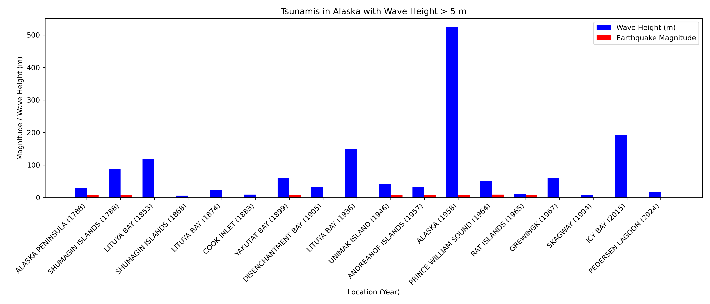
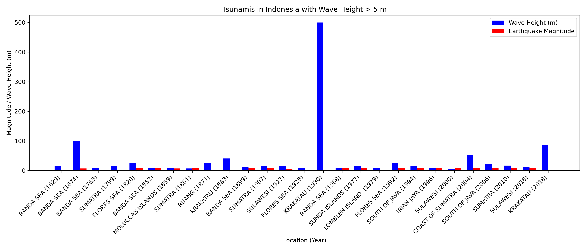
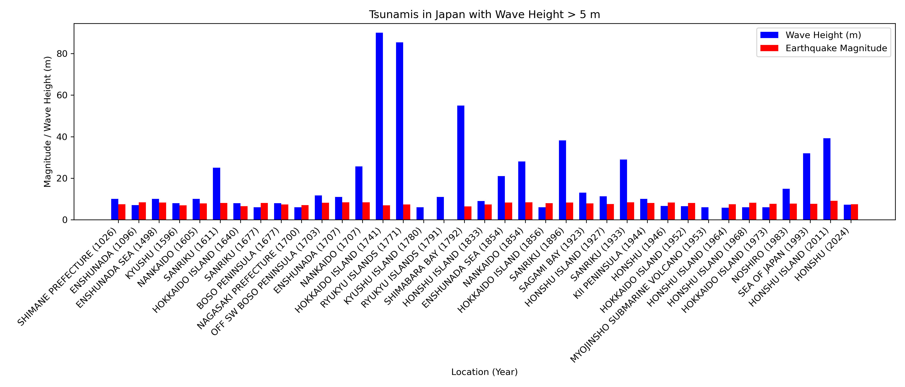
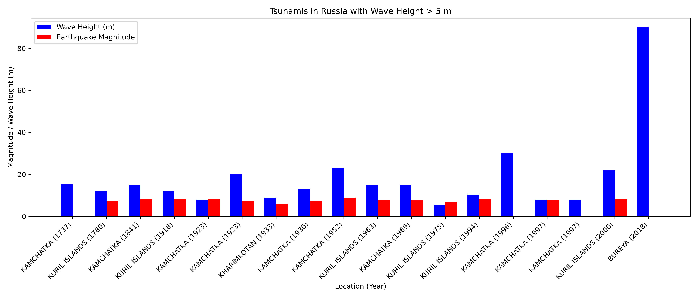

This page presents a visual comparison of tsunamis with wave heights greater than 5 metres, alongside their associated earthquake magnitudes. Locations such as Alaska, Indonesia, Japan, and Russia are analysed to explore the relationship between seismic activity and tsunami impact.
This visualisation presents major tsunamis in Alaska with wave heights exceeding 5 metres. It includes notable events such as the 1958 Lituya Bay megatsunami, which produced the tallest wave ever recorded. The chart also compares the wave heights with their associated earthquake magnitudes.
Indonesia's coastline is highly seismically active. This chart displays major tsunamis in the region with wave heights over 5 metres, including the devastating 2004 Indian Ocean tsunami. Earthquake magnitudes are included to reveal the scale of seismic triggers.
Japan has experienced numerous destructive tsunamis over centuries. This graph highlights events where wave heights exceeded 5 metres, including the catastrophic 2011 Tōhoku tsunami. The visual also pairs each tsunami with its earthquake magnitude.
The Russian Far East, particularly around Kamchatka and the Kuril Islands, has been affected by multiple tsunamis. This chart visualises wave heights above 5 metres and correlates them with earthquake events, shedding light on regional seismic risk.
